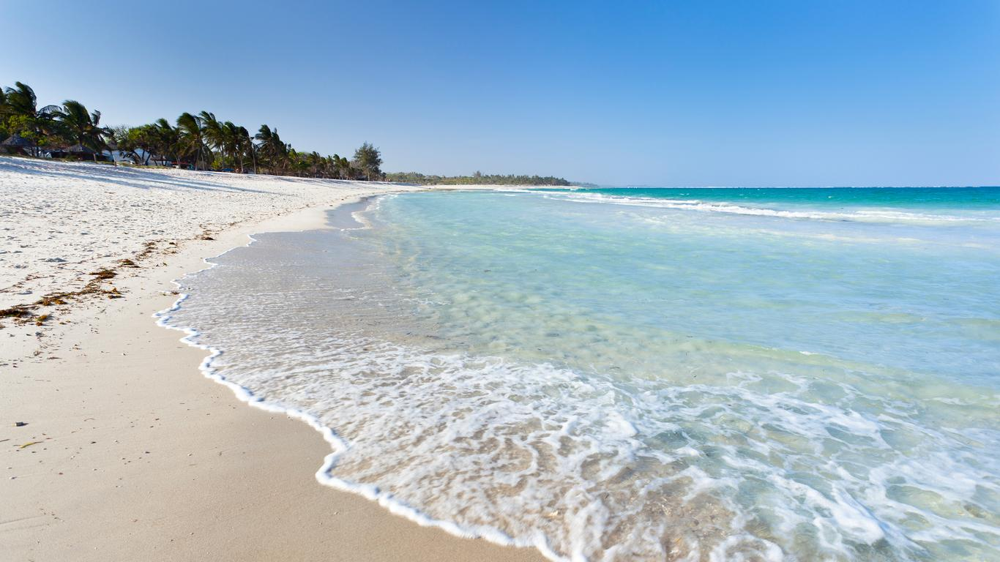

Dreaming of your next adventure? Whether you crave sun-soaked beaches, thrilling safaris, historic cities, or
serene mountain retreats, we’ve got the perfect destination for you.
Browse through our handpicked travel experiences and discover exclusive deals, hidden gems, and must-visit locations around the world. Whether you're planning a solo
journey, a romantic getaway, or a family vacation, start exploring and make unforgettable memories.
✨ Where will your next adventure take you?
Some of our popular destinations
Discover Mombasa: Your Coastal Escape Awaits!
Mombasa is a tropical paradise where pristine beaches, vibrant culture, and rich history come together to create the ultimate getaway. Let us take you on a journey to this captivating coastal destination.
Why Mombasa?
Stunning Beaches: Relax on world-famous shores like Diani, Nyali, and Bamburi, perfect for sunbathing, snorkeling, and water sports.
Rich History: Explore the iconic Fort Jesus, stroll through the charming Old Town, and experience Swahili culture through music, dance, and cuisine.
Adventures and Wildlife: Dive into the vibrant marine life at Mombasa Marine Park, spot wildlife at Haller Park, or enjoy a sunset dhow cruise.
Culinary Delights: Savor Swahili dishes, fresh seafood, and street food favorites like samosas and pilau.
Why Travel with Us?
At MEMPHIS AFRIQUE SAFARIS, we make your dream trip a reality:
Tailored Itineraries: From relaxing beach days to thrilling adventures.
All-Inclusive Packages: Accommodation, transport, and guided tours.
Local Expertise: Insider access to the best of Mombasa.
Book Your Escape Today!
Let us handle the details while you enjoy the magic of Mombasa. Contact us now to start your adventure! 🌴
Entrance into Mombasa

Mombasa beach
Mombasa Beach
Fort jesus
Old town of Mombasa
Explore the Wonders of Masai Mara with Us!
The Masai Mara, Kenya's premier wildlife destination, offers an unforgettable safari experience. Known for its vast savannahs, diverse wildlife, and the iconic Great Migration, the Mara is a bucket-list destination for nature lovers and adventure seekers.
Why Masai Mara?
Unmatched Wildlife: Witness the Big Five—lions, elephants, rhinos, leopards, and buffalo—alongside cheetahs, giraffes, and more.
The Great Migration: Experience the awe-inspiring spectacle of millions of wildebeests and zebras crossing the Mara River.
Scenic Landscapes: Enjoy breathtaking views of rolling savannahs, acacia trees, and golden sunsets.
Cultural Encounters: Visit authentic Maasai villages to learn about their traditions and way of life.
Why Travel with Us?
Custom Safaris: Game drives, hot air balloon rides, and cultural tours designed for you.
Expert Guides: Discover the Mara's secrets with local, knowledgeable guides.
Hassle-Free Planning: All-inclusive packages with transport, accommodation, and meals.
Luxury or Budget: Options for every traveler, from exclusive lodges to eco-camps.
Your Adventure Awaits!
Join us to experience the untamed beauty of Masai Mara. Book now for an unforgettable journey into the heart of Africa! 🦁🌍